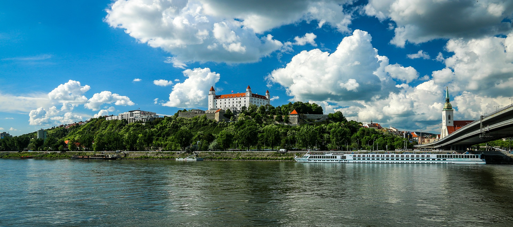
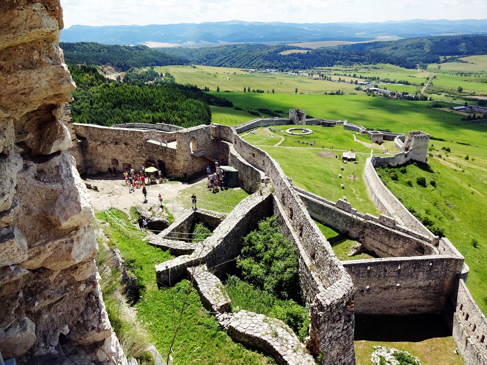

The Castles of Slovakia
Back Home
Slovak Cuisine
Slovakia is home to some of the most beautiful and best preserved castles in all of Europe.
Bratislava Castle:

Original photo by Džoko Stach, avialable
Here
Used under the
CC0 Creative Commons license
Spis Castle (Spisky Hrad)

Original photo by Katrina, avialable
Here
Used under the
CC0 Creative Commons license